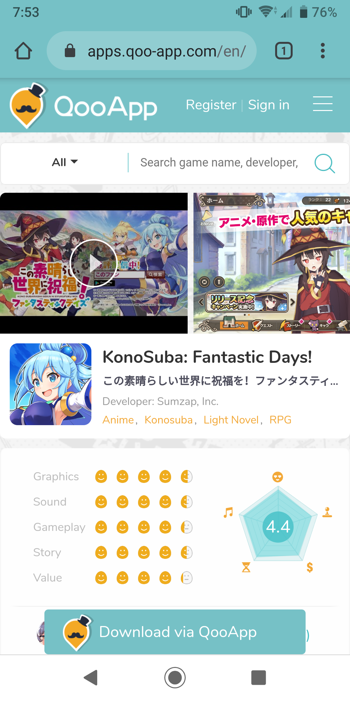
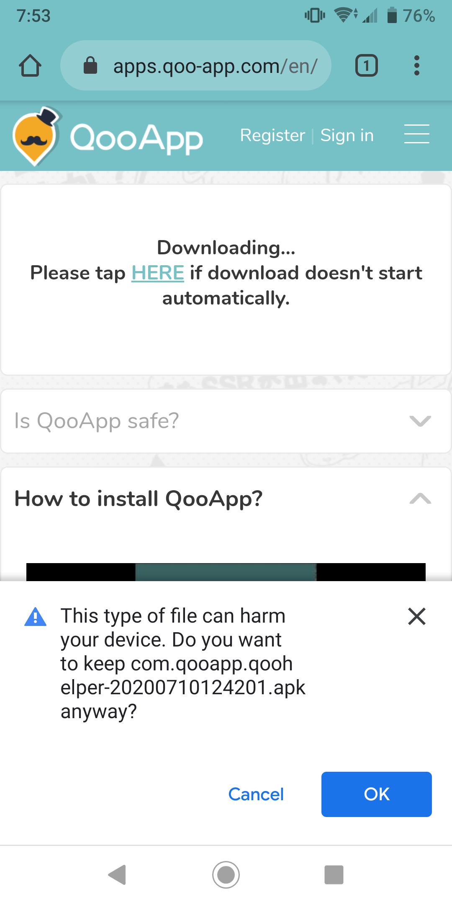
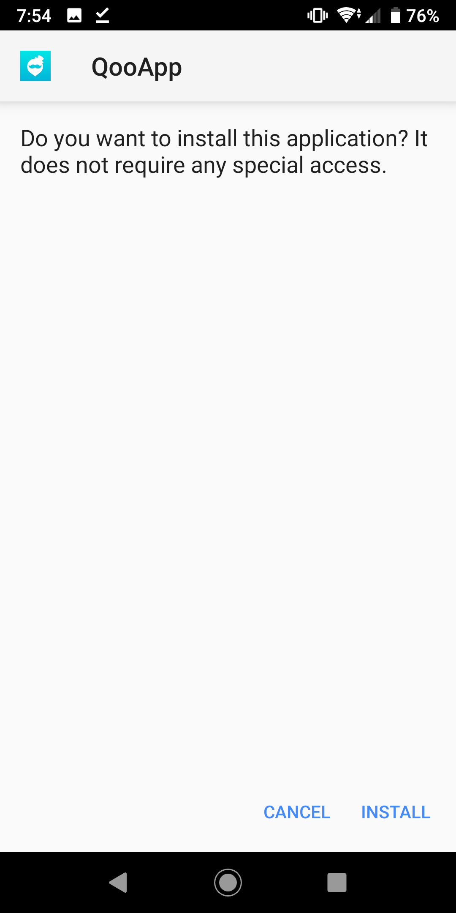
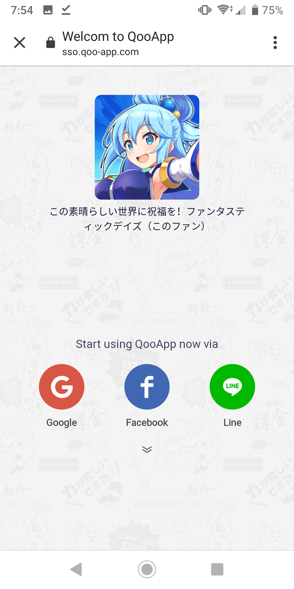
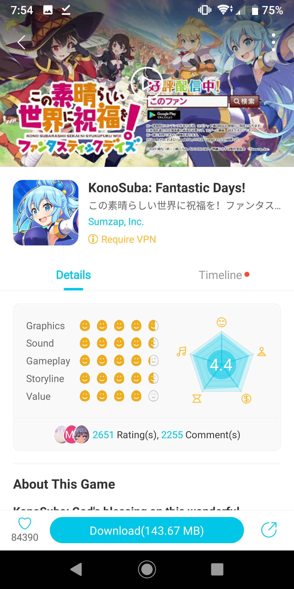
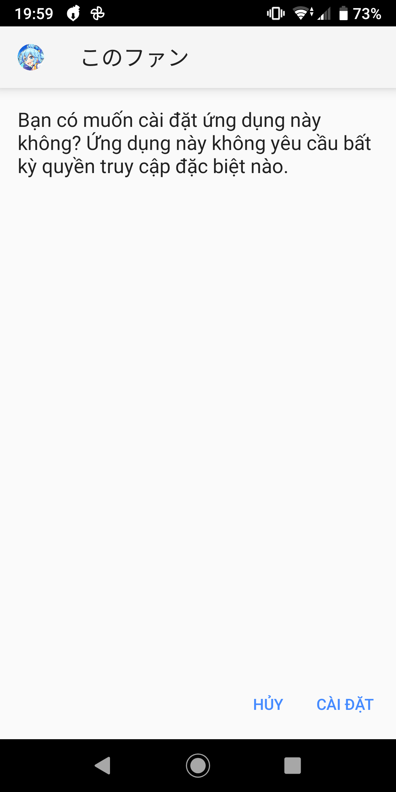
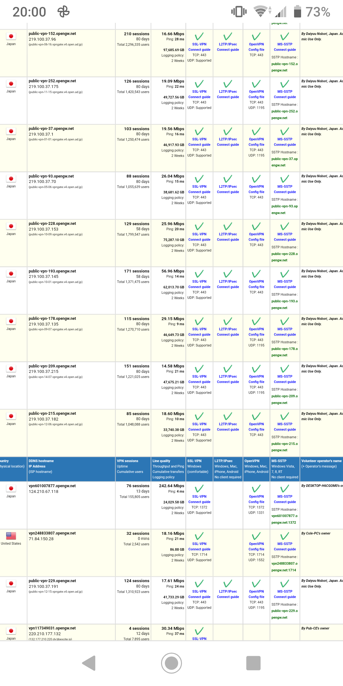
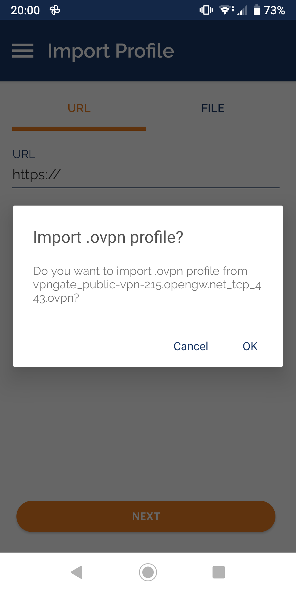

Ngoài light novel, anime, ...Konosuba còn có một tựa game có tên là Konosuba Fantastic Days, là một game RPG có cốt truyện dựa trên phần truyện chính do tác giả Natsume Akatsuki viết. Game được phát hành vào 27 tháng 2 năm 2019 và chỉ dành cho thị trường Nhật Bản.
Bước 1: Truy cập link sau https://apps.qoo-app.com/en/app/8913, bấm vào Download via QooApp
Bước 2: Một file .apk sẽ được tải, mở và cài đặt file đó
 Bước 3: Mở app có tên QooApp vừa được cài, bấm vào biểu tượng Google/Facebook để đăng ký hoặc đăng nhập
Bước 4: Sau khi đăng nhập màn hình sẽ hiển thị như sau, bấm vào nút Download để tải game
Bước 5: Khi game tải xong các bạn bấm vào Cài đặt để cài game
Bước 6: Tải và app OpenVPN tại đây: https://play.google.com/store/apps/details?id=net.openvpn.openvpn&hl=vi
Bước 7: Vào website này chọn một VPN Nhật Bản bất kỳ có ping càng thấp càng tốt rồi bấm vào OpenVPN Config file sau đó bấm vào dòng OpenVPN Configuration File bất kỳ, một file .ovpn sẽ được tải xuống
Bước 8: Mở file .ovpn vừa tải xuống lên sau đó bấm OK
Bước 9: Tích vào Connect after import sau đó bấm add, chờ app báo Connected thì mở game và tận hưởng :))
Etylix@KonoVN project